A Queue is a fundamental linear data structure used in algorithms, operating systems, databases, messaging systems, and distributed applications.
This guide covers the definition, FIFO principle, internal working, operations, types, implementations in Java, algorithms, time and space complexity, real-world applications, and common interview problems.
A Queue is a linear data structure that follows the FIFO (First In, First Out) principle.
This means:
Think of people standing in a queue at a ticket counter. The person who joins first gets served first.
Queue diagram
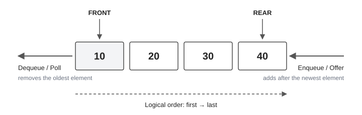
In the example:
10 is the front element and will be removed first.40 is the rear element and was inserted most recently.40.10.Unlike an array, a Queue restricts how elements are accessed. Normally, only the front element can be removed.
| Operation | Description | Typical complexity |
|---|---|---|
enqueue(x) | Insert at rear | O(1) |
dequeue() | Remove from front | O(1) |
peek() | Read front without removing | O(1) |
isEmpty() | Check whether queue is empty | O(1) |
isFull() | Check capacity (bounded queue) | O(1) |
size() | Number of elements | O(1) |
These complexities assume a properly implemented queue, such as a circular array or a linked list with head and tail pointers.
Interactive example: enqueue and dequeue
Queue simulator
3 elementsElements are removed from left and inserted on right.
Queue initialized with three elements.
Front
10
Rear
30
Size
3
Consider the following operations on an initially empty queue.
| Step | Operation | Queue (front → rear) | Result |
|---|---|---|---|
| 1 | enqueue(10) | [10] | Insert 10 |
| 2 | enqueue(20) | [10, 20] | Insert 20 |
| 3 | enqueue(30) | [10, 20, 30] | Insert 30 |
| 4 | peek() | [10, 20, 30] | Return 10 |
| 5 | dequeue() | [20, 30] | Return 10 |
| 6 | enqueue(40) | [20, 30, 40] | Insert 40 |
| 7 | dequeue() | [30, 40] | Return 20 |
Notice that peek() does not modify the queue, whereas dequeue() removes its front element.
There are four major conceptual types of queues.
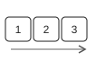
Follows normal FIFO insertion at rear and deletion at front. Can be implemented with arrays or linked lists.
Treats the storage as a ring. When the rear reaches the last array index, it can wrap around to index zero. Avoids wasting freed array slots.
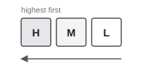
Removes an element according to priority rather than strictly by insertion order. Often implemented using a binary heap.
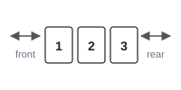
Allows insertion and removal at both ends. Useful for sliding windows, caches, and work-stealing algorithms.
In addition, software systems frequently use Blocking Queues, Concurrent Queues, Bounded Queues, and Monotonic Queues, which will be explained below.
An array-based queue stores its elements in contiguous memory locations.
There are two main approaches:
Simple linear array implementation
Suppose we have an array of capacity 5.
Initially:
Index: 0 1 2 3 4
+----+----+----+----+----+
| | | | | |
+----+----+----+----+----+After inserting 10, 20, 30:
Index: 0 1 2 3 4
+----+----+----+----+----+
| 10 | 20 | 30 | | |
+----+----+----+----+----+
↑ ↑
front rearAfter removing 10:
Index: 0 1 2 3 4
+----+----+----+----+----+
| | 20 | 30 | | |
+----+----+----+----+----+
↑ ↑
front rearThere is a problem.
If we continue inserting elements, eventually the rear reaches the last array index even though some positions at the beginning have become empty.
Two possible approaches are:
The second approach is typically more efficient.
A Circular Queue is an array-based queue where the end of the array logically connects back to its beginning.
It avoids wasting the free array positions created by dequeue operations.
Understanding circular indexing
For an array of capacity 5, the indices are:
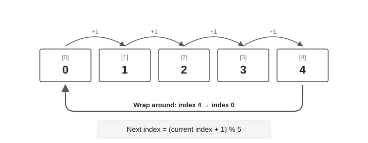
The key formula is:
nextIndex=(currentIndex+1) mod C
Where C is the capacity of the array.
Example:
Capacity = 5
(0 + 1) % 5 = 1
(1 + 1) % 5 = 2
(2 + 1) % 5 = 3
(3 + 1) % 5 = 4
(4 + 1) % 5 = 0 ← Wrap aroundFront, rear, and size
We maintain three variables:
| Variable | Meaning |
|---|---|
front | Index of the next element to remove |
rear | Index where the next element will be inserted |
size | Current number of elements |
In this implementation, rear points to the next free insertion position, not the last occupied element.
Dry run
Consider a circular queue with capacity 5.
Initial state
Step 1 / 6F = Front · R = Next insertion
Logical FIFO order
(empty)
Front index
0
Rear index
0
Size
0
Notice that the physical array stores:
[F, G, C, D, E]But the logical queue order is:
C → D → E → F → GThe physical storage order is different from the FIFO order because the front has wrapped around.
Circular queue conditions
With an explicitly maintained size:
Queue is empty:
size == 0Queue is full:
size == capacityInsert element:
elements[rear] = value;
rear = (rear + 1) % capacity;
size++;Remove element:
E value = elements[front];
front = (front + 1) % capacity;
size--;There is an alternative design without a size variable:
// Empty
front == rear
// Full, when one slot is deliberately left unused
(rear + 1) % capacity == frontThat alternative uses one array slot to distinguish full from empty. The implementation below uses size and therefore supports all allocated slots.
Complete Java implementation: Circular Queue
import java.util.Objects;
public class CircularQueue<E> {
private final Object[] elements;
private int front = 0;
private int rear = 0;
private int size = 0;
public CircularQueue(int capacity) {
if (capacity <= 0) {
throw new IllegalArgumentException(
"Capacity must be positive"
);
}
elements = new Object[capacity];
}
// Insert at the rear
public boolean offer(E value) {
Objects.requireNonNull(value);
if (isFull()) {
return false;
}
elements[rear] = value;
rear = (rear + 1) % elements.length;
size++;
return true;
}
// Remove from the front
@SuppressWarnings("unchecked")
public E poll() {
if (isEmpty()) {
return null;
}
E value = (E) elements[front];
// Release the reference for garbage collection
elements[front] = null;
front = (front + 1) % elements.length;
size--;
return value;
}
// Read front without removing
@SuppressWarnings("unchecked")
public E peek() {
if (isEmpty()) {
return null;
}
return (E) elements[front];
}
public boolean isEmpty() {
return size == 0;
}
public boolean isFull() {
return size == elements.length;
}
public int size() {
return size;
}
public int capacity() {
return elements.length;
}
public static void main(String[] args) {
CircularQueue<Integer> queue =
new CircularQueue<>(3);
System.out.println(queue.offer(10)); // true
System.out.println(queue.offer(20)); // true
System.out.println(queue.offer(30)); // true
System.out.println(queue.offer(40)); // false
System.out.println(queue.poll()); // 10
System.out.println(queue.peek()); // 20
System.out.println(queue.offer(40)); // true
System.out.println(queue.poll()); // 20
System.out.println(queue.poll()); // 30
System.out.println(queue.poll()); // 40
System.out.println(queue.poll()); // null
}
}Complexity
| Operation | Time |
|---|---|
| Enqueue | O(1) |
| Dequeue | O(1) |
| Peek | O(1) |
| isEmpty / isFull | O(1) |
| Space | O(C), where C is capacity |
Limitation: This implementation has a fixed capacity. Insertion fails when it becomes full.
Dynamically resizing circular queue
A dynamically growing queue can double its internal array when full, similar to an ArrayList.
The important detail is that elements must be copied in logical queue order, starting from front.
private void grow() {
Object[] expanded =
new Object[elements.length * 2];
for (int i = 0; i < size; i++) {
expanded[i] =
elements[(front + i) % elements.length];
}
elements = expanded;
front = 0;
rear = size;
}This method assumes elements is not final, the initial capacity is positive, and capacity doubling is within supported array limits.
A resize takes O(n), but if the array doubles geometrically, enqueue remains amortized O(1): the average cost over a long sequence of operations is constant.
A linked-list queue stores elements in nodes instead of contiguous array slots.
Each node contains:
+-----------+-----------+
| DATA | NEXT |
+-----------+-----------+A queue using a singly linked list maintains two references:
head: points to the first node.tail: points to the last node.Linked-list queue diagram
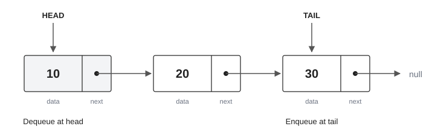
Enqueue algorithm
To insert a new element:
head and tail to the new node.tail.next to the new node.tail.This requires O(1) time.
Dequeue algorithm
To remove an element:
head is null.head to head.next.tail = null.This also requires O(1) time.
Complete Java implementation
import java.util.Objects;
public class LinkedQueue<E> {
private static class Node<E> {
E data;
Node<E> next;
Node(E data) {
this.data = data;
}
}
private Node<E> head;
private Node<E> tail;
private int size;
public boolean offer(E value) {
Objects.requireNonNull(value);
Node<E> node = new Node<>(value);
if (tail == null) {
head = node;
tail = node;
} else {
tail.next = node;
tail = node;
}
size++;
return true;
}
public E poll() {
if (head == null) {
return null;
}
E result = head.data;
head = head.next;
if (head == null) {
tail = null;
}
size--;
return result;
}
public E peek() {
return head == null ? null : head.data;
}
public boolean isEmpty() {
return head == null;
}
public int size() {
return size;
}
public static void main(String[] args) {
LinkedQueue<Integer> queue =
new LinkedQueue<>();
queue.offer(10);
queue.offer(20);
queue.offer(30);
System.out.println(queue.peek()); // 10
System.out.println(queue.poll()); // 10
System.out.println(queue.poll()); // 20
queue.offer(40);
System.out.println(queue.poll()); // 30
System.out.println(queue.poll()); // 40
System.out.println(queue.isEmpty()); // true
}
}Advantages and disadvantages
Advantages
Disadvantages
This is a classic data-structure interview problem.
A Stack follows LIFO (Last In, First Out), whereas a Queue follows FIFO.
How can two LIFO stacks implement FIFO?
Core idea
Maintain two stacks:
inStack: accepts newly enqueued elements.outStack: supplies elements for dequeue.When outStack is empty, transfer all elements from inStack to outStack.
Transferring reverses their order, making the oldest element available at the top of outStack.
Diagram: Two-stack queue
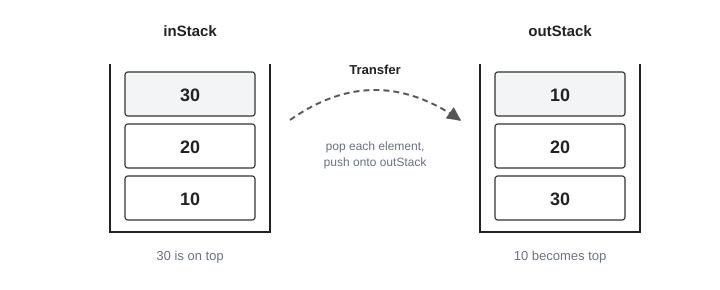
The transfer reverses stack order to produce FIFO order.
The transfer proceeds:
Before transfer:
inStack: bottom [10, 20, 30] top
outStack: empty
After transfer:
inStack: empty
outStack: bottom [30, 20, 10] top
Poll → 10
Poll → 20
Poll → 30Java implementation
import java.util.ArrayDeque;
import java.util.Deque;
import java.util.Objects;
public class QueueUsingStacks<E> {
private final Deque<E> inStack =
new ArrayDeque<>();
private final Deque<E> outStack =
new ArrayDeque<>();
public void offer(E value) {
inStack.push(Objects.requireNonNull(value));
}
private void moveIfNecessary() {
if (outStack.isEmpty()) {
while (!inStack.isEmpty()) {
outStack.push(inStack.pop());
}
}
}
public E poll() {
moveIfNecessary();
return outStack.poll();
}
public E peek() {
moveIfNecessary();
return outStack.peek();
}
public boolean isEmpty() {
return inStack.isEmpty()
&& outStack.isEmpty();
}
public int size() {
return inStack.size() + outStack.size();
}
public static void main(String[] args) {
QueueUsingStacks<Integer> queue =
new QueueUsingStacks<>();
queue.offer(10);
queue.offer(20);
queue.offer(30);
System.out.println(queue.poll()); // 10
queue.offer(40);
System.out.println(queue.poll()); // 20
System.out.println(queue.poll()); // 30
System.out.println(queue.poll()); // 40
}
}Amortized time complexity
| Operation | Worst-case | Amortized |
|---|---|---|
| Enqueue | O(1) | O(1) |
| Dequeue | O(n) | O(1) |
| Peek | O(n) | O(1) |
| Size | O(1) | O(1) |
Why is dequeue amortized O(1)?
Each element is:
inStack once.inStack at most once.outStack at most once.outStack at most once.Even though a particular dequeue may transfer n elements, each element is transferred only once.
Therefore, the total work for n inserted and removed elements is O(n), giving amortized O(1) per operation.
Important: Always transfer from inStack only when outStack is empty. Otherwise, you may violate FIFO ordering.
A Priority Queue is a specialized queue in which elements are removed according to their priority rather than strictly according to FIFO.
Example: Operating-system task scheduling.
| Task | Priority |
|---|---|
| Send email | 1 |
| Generate report | 3 |
| Process payment | 10 |
| Update cache | 2 |
If higher numbers indicate higher priority, the processing order would be:
Process payment (10)
Generate report (3)
Update cache (2)
Send email (1)Priority queues are commonly implemented using a Binary Heap.
Min-heap and max-heap
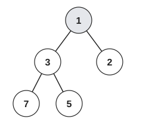
Smallest element at root
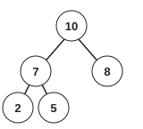
Largest element at root
A binary heap satisfies the heap-order property, but the entire structure is not globally sorted.
Java implementation
Java provides java.util.PriorityQueue.
import java.util.Comparator;
import java.util.PriorityQueue;
import java.util.Queue;
public class PriorityQueueExample {
public static void main(String[] args) {
// Min-priority queue (default)
Queue<Integer> minQueue =
new PriorityQueue<>();
minQueue.offer(30);
minQueue.offer(10);
minQueue.offer(20);
System.out.println(minQueue.poll()); // 10
System.out.println(minQueue.poll()); // 20
System.out.println(minQueue.poll()); // 30
// Max-priority queue
Queue<Integer> maxQueue =
new PriorityQueue<>(
Comparator.reverseOrder()
);
maxQueue.offer(30);
maxQueue.offer(10);
maxQueue.offer(20);
System.out.println(maxQueue.poll()); // 30
System.out.println(maxQueue.poll()); // 20
System.out.println(maxQueue.poll()); // 10
}
}Priority queue with custom objects
import java.util.Comparator;
import java.util.PriorityQueue;
import java.util.Queue;
record Task(String name, int priority) {}
public class TaskScheduler {
public static void main(String[] args) {
Queue<Task> tasks = new PriorityQueue<>(
Comparator.comparingInt(Task::priority)
.reversed()
);
tasks.offer(new Task("Email", 1));
tasks.offer(new Task("Report", 3));
tasks.offer(new Task("Payment", 10));
while (!tasks.isEmpty()) {
System.out.println(tasks.poll());
}
}
}Output:
Task[name=Payment, priority=10]
Task[name=Report, priority=3]
Task[name=Email, priority=1]Important: Java's PriorityQueue is not stable. Two tasks with equal priority are not guaranteed to execute in insertion order. If FIFO ordering among equal-priority tasks matters, include a monotonically increasing sequence number as a secondary comparison key.
Complexity
| Operation | Time |
|---|---|
| Offer | O(log n) |
| Poll | O(log n) |
| Peek | O(1) |
| Search for arbitrary element | O(n) |
| Space | O(n) |
A Deque, pronounced deck, allows both insertion and removal at either end.
Unlike a normal Queue, a Deque supports:
DEQUE
+----+----+----+
Front ↔ | 10 | 20 | 30 | ↔ Rear
+----+----+----+
Both ends support
insertion and removalDeque operations
| Operation | Description |
|---|---|
addFirst(x) | Insert at front |
addLast(x) | Insert at rear |
pollFirst() | Remove from front |
pollLast() | Remove from rear |
peekFirst() | View front |
peekLast() | View rear |
Java example
import java.util.ArrayDeque;
import java.util.Deque;
public class DequeExample {
public static void main(String[] args) {
Deque<Integer> deque = new ArrayDeque<>();
deque.addLast(10);
deque.addLast(20);
deque.addFirst(5);
deque.addLast(30);
System.out.println(deque);
// [5, 10, 20, 30]
System.out.println(deque.pollFirst());
// 5
System.out.println(deque.pollLast());
// 30
System.out.println(deque);
// [10, 20]
}
}Input-restricted and output-restricted deques
Two theoretical variants are sometimes discussed:
Most general-purpose Deque implementations support operations at both ends.
Applications
Deques are useful for:
A doubly linked list or circular array is commonly used internally to support O(1) operations at both ends.
Java provides the Queue<E> interface under java.util.
The hierarchy is conceptually:
Iterable
|
Collection
|
Queue
|
DequeDeque extends Queue, adding operations at both ends.
Methods and exception behavior
Java offers two styles for the main Queue operations.
| Operation | Throws exception on failure | Special return on failure |
|---|---|---|
| Insert | add(e) | offer(e) |
| Remove | remove() | poll() |
| Examine | element() | peek() |
Examples:
Queue<Integer> queue = new ArrayDeque<>();
queue.offer(10);
queue.offer(20);
System.out.println(queue.peek()); // 10
System.out.println(queue.element()); // 10
System.out.println(queue.poll()); // 10
System.out.println(queue.remove()); // 20
System.out.println(queue.poll()); // null
// Throws NoSuchElementException
System.out.println(queue.remove());add() can throw IllegalStateException for a capacity-restricted queue if an element cannot be inserted because the queue is full. offer() instead returns false for that condition.
remove() and element() throw NoSuchElementException for an empty queue, whereas poll() and peek() return null.
Because null indicates absence, avoiding null queue elements is strongly recommended. Many implementations, including ArrayDeque, prohibit them.
Important Java Queue implementations
| Implementation | Ordering | Thread-safe? | Main use |
|---|---|---|---|
ArrayDeque | FIFO or LIFO | No | General-purpose queue/deque |
LinkedList | FIFO or LIFO | No | Node-based queue/deque |
PriorityQueue | Priority | No | Heap-based scheduling |
ArrayBlockingQueue | FIFO | Yes | Bounded producer-consumer |
LinkedBlockingQueue | FIFO | Yes | Producer-consumer |
ConcurrentLinkedQueue | FIFO | Yes | Non-blocking concurrent queue |
PriorityBlockingQueue | Priority | Yes | Concurrent priority scheduling |
DelayQueue | Delay expiration | Yes | Delayed tasks |
SynchronousQueue | Direct handoff | Yes | Thread rendezvous |
Which ordinary Java queue should you use?
For most non-concurrent FIFO requirements, prefer:
Queue<Integer> queue = new ArrayDeque<>();ArrayDeque typically offers better cache locality and lower per-element memory overhead than a linked list.
Use LinkedList when you specifically need its linked-list behavior, not simply because you're implementing a queue.
Use PriorityQueue when ordering by priority is required rather than FIFO.
Queues are especially important in multithreaded systems.
Consider two independent threads:
They communicate through a shared queue.
Producer–consumer architecture
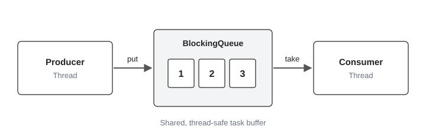
What is a BlockingQueue?
A BlockingQueue is a thread-safe queue that can make threads wait when a required condition is not satisfied.
For a bounded blocking queue:
put(x) waits if the queue is full.take() waits if the queue is empty.This behavior helps control the rate of work being submitted and processed.
Java producer-consumer example
import java.util.concurrent.ArrayBlockingQueue;
import java.util.concurrent.BlockingQueue;
public class ProducerConsumerExample {
private static final String STOP = "STOP";
public static void main(String[] args)
throws InterruptedException {
BlockingQueue<String> queue =
new ArrayBlockingQueue<>(2);
Thread producer = new Thread(() -> {
try {
for (int i = 1; i <= 5; i++) {
String task = "Task-" + i;
queue.put(task);
System.out.println(
"Produced: " + task
);
}
queue.put(STOP);
} catch (InterruptedException e) {
Thread.currentThread().interrupt();
}
});
Thread consumer = new Thread(() -> {
try {
while (true) {
String task = queue.take();
if (STOP.equals(task)) {
break;
}
System.out.println(
"Consumed: " + task
);
}
} catch (InterruptedException e) {
Thread.currentThread().interrupt();
}
});
producer.start();
consumer.start();
producer.join();
consumer.join();
}
}The exact interleaving of printed producer/consumer messages depends on thread scheduling. The order in which the consumer receives the tasks remains FIFO.
What happens when the queue becomes full?
Suppose the queue capacity is 3.
Producer inserts: A, B, C
Queue:
[A, B, C] → FULL
Producer tries to insert D
put(D) blocks
|
| Consumer removes A
v
Queue:
[B, C]
Producer resumes and inserts D
Queue:
[B, C, D]This is a form of backpressure: instead of accepting unlimited work and consuming all available memory, a bounded queue limits how far a producer can get ahead of a consumer.
BlockingQueue operation behavior
| Method | Empty queue | Full queue |
|---|---|---|
put(e) | Inserts normally | Blocks |
take() | Blocks | Removes normally |
offer(e) | Inserts normally | Returns false |
poll() | Returns null | Removes normally |
offer(e, timeout, unit) | Inserts normally | Waits up to timeout |
poll(timeout, unit) | Waits up to timeout | Removes normally |
ConcurrentLinkedQueue
ConcurrentLinkedQueue is a non-blocking, thread-safe FIFO queue.
import java.util.Queue;
import java.util.concurrent.ConcurrentLinkedQueue;
Queue<String> queue = new ConcurrentLinkedQueue<>();
queue.offer("Task-A");
queue.offer("Task-B");
System.out.println(queue.poll()); // Task-A
System.out.println(queue.poll()); // Task-BKey properties:
poll() returns null when empty.size() is O(n), not O(1), and is not a reliable synchronization mechanism when the queue is changing concurrently.Choosing between them: Use BlockingQueue when consumers should wait for work or bounded capacity must provide backpressure. Consider ConcurrentLinkedQueue when non-blocking operations are required and your design handles empty queues and capacity limits separately.
A thread-safe FIFO queue also does not guarantee that tasks will finish in FIFO order when multiple consumers process tasks concurrently.
Breadth-First Search (BFS)
BFS is one of the most important algorithms built around a queue.
It explores a graph level by level.
Consider the following graph:
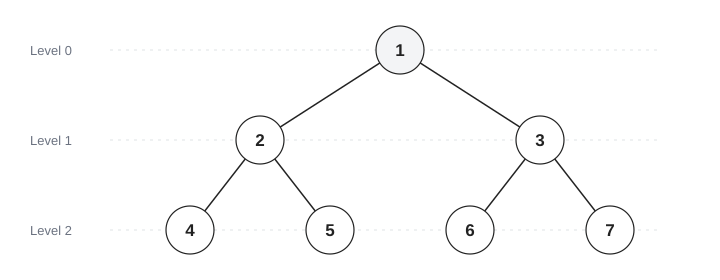
The BFS traversal order, visiting neighbors from left to right, is:
1 → 2 → 3 → 4 → 5 → 6 → 7Why does BFS require a queue?
When node 1 is visited, its neighboring nodes 2 and 3 enter the queue. Node 2 must be processed before its newly discovered children can overtake node 3.
FIFO ensures vertices are explored in nondecreasing distance (number of edges) from the starting vertex.
Java BFS implementation
import java.util.*;
public class BFSExample {
public static void bfs(
List<List<Integer>> graph,
int start) {
boolean[] visited =
new boolean[graph.size()];
Queue<Integer> queue =
new ArrayDeque<>();
visited[start] = true;
queue.offer(start);
while (!queue.isEmpty()) {
int current = queue.poll();
System.out.print(current + " ");
for (int neighbor : graph.get(current)) {
if (!visited[neighbor]) {
visited[neighbor] = true;
queue.offer(neighbor);
}
}
}
}
public static void main(String[] args) {
List<List<Integer>> graph = List.of(
List.of(1, 2), // 0
List.of(3, 4), // 1
List.of(5), // 2
List.of(), // 3
List.of(), // 4
List.of() // 5
);
bfs(graph, 0);
// 0 1 2 3 4 5
}
}Complexity: O(V + E) time and O(V) auxiliary space, where V is the number of vertices and E is the number of edges.
BFS is used in graph traversal, unweighted shortest paths, level-order tree traversal, and many search problems.
Sliding Window Maximum Using a Monotonic Deque
A monotonic deque maintains candidates in increasing or decreasing value order.
Suppose:
Array = [1, 3, -1, -3, 5, 3, 6, 7]
Window size = 3Find the maximum element in every contiguous window.
| Window | Maximum |
|---|---|
| [1, 3, -1] | 3 |
| [3, -1, -3] | 3 |
| [-1, -3, 5] | 5 |
| [-3, 5, 3] | 5 |
| [5, 3, 6] | 6 |
| [3, 6, 7] | 7 |
Result:
[3, 3, 5, 5, 6, 7]A naive approach checks all k items per window: O(nk).
Using a monotonic deque, this becomes O(n).
import java.util.ArrayDeque;
import java.util.Deque;
public class SlidingWindowMaximum {
public static int[] maxSlidingWindow(
int[] nums,
int k) {
if (k <= 0 || k > nums.length) {
throw new IllegalArgumentException(
"Invalid window size"
);
}
int[] result =
new int[nums.length - k + 1];
// Stores array indices, not values
Deque<Integer> deque = new ArrayDeque<>();
for (int i = 0; i < nums.length; i++) {
// Remove indices outside the window
while (!deque.isEmpty()
&& deque.peekFirst() <= i - k) {
deque.pollFirst();
}
// Remove smaller or equal candidates
while (!deque.isEmpty()
&& nums[deque.peekLast()] <= nums[i]) {
deque.pollLast();
}
deque.offerLast(i);
if (i >= k - 1) {
result[i - k + 1] =
nums[deque.peekFirst()];
}
}
return result;
}
}Each index enters the deque exactly once and is removed at most once. Therefore, the total time is O(n), with O(k) auxiliary deque space.
Topological Sorting (Kahn's Algorithm)
A queue is also used to perform topological sorting on a directed acyclic graph (DAG).
The algorithm:
If fewer than V vertices are output, the graph contains a cycle.
Applications include dependency resolution, build systems, and scheduling jobs with prerequisite tasks.
Other applications
| Application | How a queue is used |
|---|---|
| Print spooler | Print requests wait to be processed |
| Thread pool | Pending tasks wait for worker threads |
| Web server | Requests may wait for available processing capacity |
| Operating system | Ready processes and round-robin scheduling |
| Network processing | Packets are buffered before transmission or processing |
| BFS | Nodes are explored layer by layer |
| Event loop | Events or callbacks await dispatch |
| Messaging systems | Messages are buffered for consumers |
| Rate limiter | Requests or timestamps can be tracked in a moving window |
| Streaming pipeline | Data items move between asynchronous stages |
A useful distinction in distributed systems: Kafka partitions are append-only logs with consumer offsets and retention, not simple destructive FIFO queues. They can support queue-like processing with consumer groups, but their storage and replay semantics differ from a conventional queue.
| Implementation | Enqueue | Dequeue | Peek | Extra space |
|---|---|---|---|---|
| Array with shifting | O(1) | O(n) | O(1) | O(C) |
| Fixed circular array | O(1) | O(1) | O(1) | O(C) |
| Dynamic circular array | Amortized O(1) | O(1) | O(1) | O(n) capacity |
| Singly linked list | O(1) | O(1) | O(1) | O(n) |
| Two stacks | O(1) | Amortized O(1) | Amortized O(1) | O(n) |
| Binary heap priority queue | O(log n) | O(log n) | O(1) | O(n) |
Here C represents allocated queue capacity and n represents the number of stored elements. Dynamic arrays can temporarily allocate more capacity than the current element count.
Array-based vs. linked-list queue
| Feature | Circular array | Linked list |
|---|---|---|
| Memory layout | Contiguous | Separate nodes |
| Capacity | Fixed or resizable | Grows by node allocation |
| Pointer overhead | Low | Higher |
| Cache locality | Usually better | Usually worse |
| Resize cost | Possible O(n) | Not required |
| Enqueue/dequeue | O(1) normally | O(1) |
| Memory fragmentation | Generally lower | More allocation overhead |
For a general-purpose, single-threaded Java FIFO queue, a dynamically resized array-based ArrayDeque is usually a strong default.
| Structure | Removal order | Typical use |
|---|---|---|
| Queue | FIFO | Task processing, BFS |
| Stack | LIFO | DFS, function calls, undo |
| Deque | Either end | Sliding window, flexible buffering |
| Priority Queue | Comparator-defined priority | Scheduling, Dijkstra's algorithm |
For example, inserting 10, 20, 30 produces different removal orders:
QUEUE (FIFO):
10 → 20 → 30
STACK (LIFO):
30 → 20 → 10
MAX PRIORITY QUEUE:
30 → 20 → 10
MIN PRIORITY QUEUE:
10 → 20 → 30A priority queue may produce the same order as a stack or queue for some inputs, but its behavior is based on priority, not insertion order.
Queue overflow
Overflow happens when insertion is attempted into a full bounded queue.
Possible behaviors include returning false, throwing an exception, blocking the producer, or growing capacity if the implementation supports resizing.
Queue underflow
Underflow happens when removal is attempted from an empty queue.
Depending on the API, the operation might return null, throw an exception, or block waiting for an element.
Memory management
In array-based queues, clear removed references:
elements[front] = null;Otherwise, the internal array may continue retaining objects that are no longer logically stored in the queue.
Concurrency
An ordinary ArrayDeque is not thread-safe.
Using it concurrently without proper synchronization can cause races and inconsistent results. Use an appropriate concurrent queue or external synchronization when multiple threads need access.
Backpressure
For a producer-consumer system, unbounded queues can accumulate unlimited pending tasks if the consumer is slower than the producer, eventually exhausting memory.
Bounded queues make overload behavior explicit.
Fairness and starvation
FIFO queues normally serve elements in insertion order. Priority queues can starve low-priority tasks if higher-priority tasks continue arriving.
Some schedulers use aging, which raises the effective priority of tasks that have waited a long time.
A Queue is a FIFO abstraction, not a particular storage implementation. Its defining behavior is that elements are normally inserted at one end and removed from the other.
The main concepts to retain are:
For Java development, master ArrayDeque, PriorityQueue, and BlockingQueue first, then implement circular and linked-list queues yourself to understand how FIFO ordering is maintained internally.